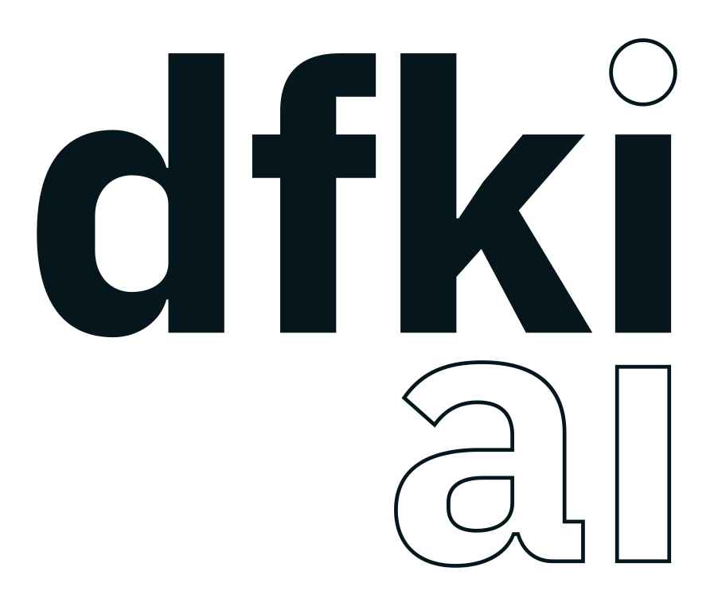
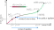

Trust Region Inverse Reinforcement Learning : Explicit Dual Ascent using Local Policy Updates
Technical University of Darmstadt · Lund University · Huawei, Noah's Ark Lab
· University College London ·
hessian.AI · German Research Center for AI (DFKI) · Robotics Institute Germany (RIG)
TL;DR We present an inverse RL method that optimizes the IRL Lagrangian dual using local trust-region policy updates and a reward correction step. The key insight is that a trust-region-optimal policy for one reward update can be globally optimal for a smaller update in the same direction, yielding monotonic improvement and global reward learning.

TRIRL uses cheap, trust-region policy updates and corrects the reward to account for this local policy optimization.
Abstract
Inverse reinforcement learning (IRL) is typically formulated as maximizing entropy subject to matching the distribution of expert trajectories. Classical (dual-ascent) IRL guarantees monotonic performance improvement but requires fully solving an RL problem each iteration to compute dual gradients. More recent adversarial methods avoid this cost at the expense of stability and monotonic dual improvement, by directly optimizing the primal problem and using a discriminator to provide rewards. In this work, we bridge the gap between these approaches by enabling monotonic improvement of the reward function and policy without having to fully solve an RL problem at every iteration. Our key theoretical insight is that a trust-region-optimal policy for a reward function update can be globally optimal for a smaller update in the same direction. This smaller update allows us to explicitly optimize the dual objective while only relying on a local search around the current policy. In doing so, our approach avoids the training instabilities of adversarial methods, offers monotonic performance improvement, and learns a reward function in the traditional sense of IRL---one that can be globally optimized to match expert demonstrations. Our proposed algorithm, Trust Region Inverse Reinforcement Learning (TRIRL), outperforms state-of-the-art imitation learning methods across multiple challenging tasks by a factor of 2.4x in terms of aggregate inter-quartile mean, while recovering reward functions that generalize to system dynamics shifts.
Results
We compare against state-of-the-art IL/IRL methods on MuJoCo benchmarks and humanoid/quadrupedal robotics tasks (Unitree G1, Go2), across 20 independent seeds. TRIRL can be used in observation-based imitation settings, and with arbitrary feature functions.


| Task | Training | Retraining | Transfer | ||||||
|---|---|---|---|---|---|---|---|---|---|
| TRIRL | AIRL | NEAR | TRIRL | AIRL | NEAR | TRIRL | AIRL | NEAR | |
| Point Maze | 1.03 ± 0.01 | 0.45 ± 0.12 | 0.28 ± 0.09 | 0.98 ± 0.01 | 0.35 ± 0.07 | 0.28 ± 0.09 | 0.96 ± 0.001 | 0.06 ± 0.64 | 0.29 ± 0.13 |
| Ant | 0.91 ± 0.17 | 0.59 ± 0.25 | 0.46 ± 0.29 | 0.63 ± 0.09 | 0.10 ± 0.13 | 0.46 ± 0.29 | 0.89 ± 0.12 | 0.42 ± 0.25 | 0.33 ± 0.18 |
| Half Cheetah | 0.83 ± 0.19 | 0.39 ± 0.14 | 0.09 ± 0.28 | 0.70 ± 0.24 | 0.08 ± 0.28 | 0.09 ± 0.28 | (W) 0.63 ± 0.29 (MG) 0.30 ± 0.13 | (W) 0.16 ± 0.25 (MG) -0.10 ± 0.06 | (W) 0.10 ± 0.18 (MG) -0.06 ± 0.12 |
| Hopper | 0.49 ± 0.16 | 0.68 ± 0.11 | 0.22 ± 0.09 | 0.36 ± 0.13 | 0.12 ± 0.11 | 0.22 ± 0.09 | --- | --- | --- |
Theory
We are interested in IRL by reverse KL divergence-based distribution matching
This problem is classically solved using Lagrangian optimization by formulating a Lagrangian $\mathcal{L}(\pi, r)$, deriving the Lagrangian dual $\mathcal{G}(r) = \mathcal{L}(\pi_r, r)$, and minimizing it using gradient descent. However, instead of using standard gradient descent, we use an empirically superior function-space reward update
Given such a function-space reward update, our key theoretical contribution is that
Hence, we use a novel mechanic for IRL: instead of finding a max-ent optimal policy for the updated reward, we find a trust region optimal policy for this reward, and correct the reward function to account for the fact that our policy was only optimized locally.
- Initialize: \(\epsilon\) ; \(r^{(0)} = 0.0\) ; \(\pi^{(0)} = \text{unif.}\)
- Output: \(r^\star\) and \(\pi^\star\)
- repeat
- rollout \(\pi^{(i)}\) ; learn \(D^{(i)} \approx \log\!\left(\frac{\rho_E}{\rho_{\pi^{(i)}}}\right)\)
- \(\tilde{r}^{(i+1)} = (1-\epsilon) r^{(i)} + \epsilon \beta D^{(i)}\)
- \(\pi_{\text{tr}}^{(i+1)}\) & \(\eta^{(i+1)} \gets\) trust region policy update
- \(\epsilon_{\text{tr}} = \frac{\epsilon}{\left( 1 + \eta^{(i+1)} \right)}\)
- \(r^{(i+1)} = (1-\epsilon_{\text{tr}}) r^{(i)} + \epsilon_{\text{tr}} \beta D^{(i)}\)
- \(\pi_{\text{tr}} \text{ on } \tilde{r}^{(i+1)} \equiv \pi_{\text{MCE}} \text{ on } r^{(i+1)}\)
- \(r^{(i)} \gets r^{(i+1)}\) ; \(\pi^{(i)} \gets \pi_{\text{tr}}^{(i+1)}\)
- until converged
Citation
@inproceedings{diwan2026trirl,
title = {Trust Region Inverse Reinforcement Learning:
Explicit Dual Ascent using Local Policy Updates},
author = {Diwan, Anish and Tateo, Davide and Mower, Christopher E.
and Bou-Ammar, Haitham and Peters, Jan and Arenz, Oleg},
booktitle = {International Conference on Machine Learning (ICML)},
year = {2026}
}